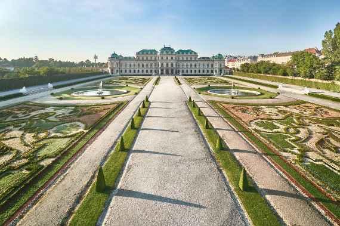
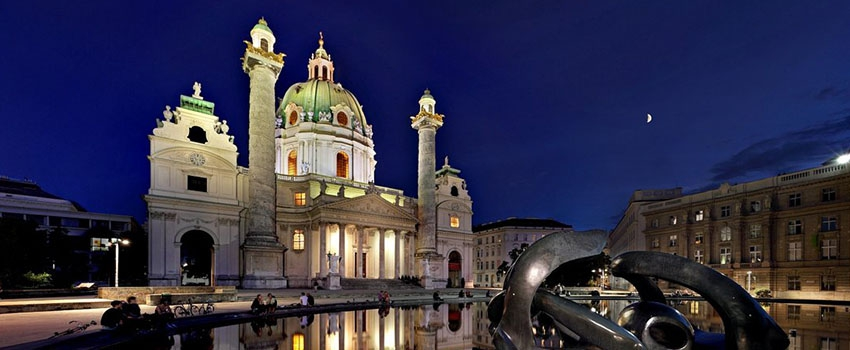
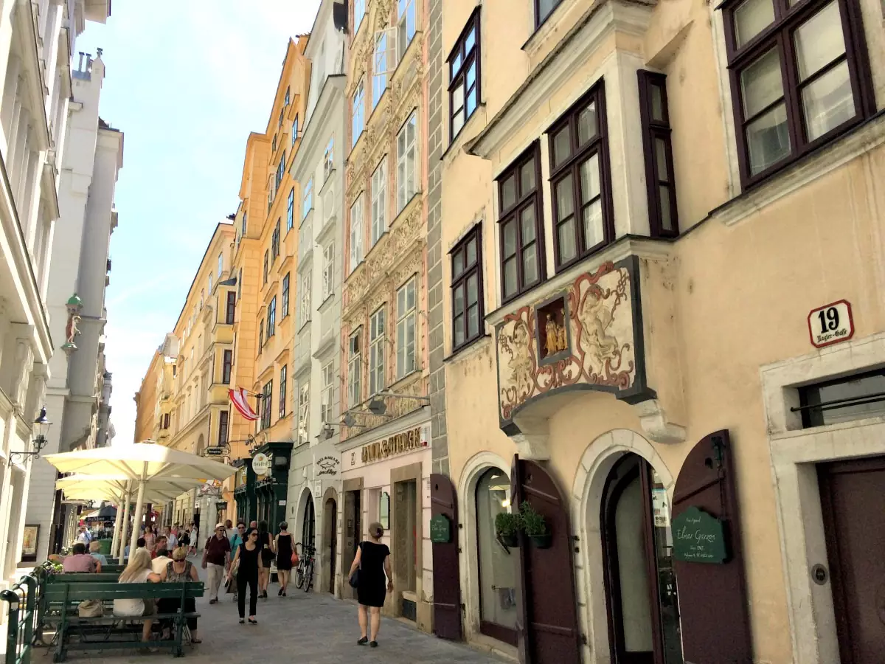

Bécs rengeteg modon megközelithető, de mi a vonatot választottuk így mi a Bécsi főpályaudvaron kezdtük a turánkat. Öszesen egy napunk volt a városban így nem sokat időztünk a pályaudvaron.

A Belvedere kastély felé indultunk elöször és végig sétáltunk a Schwarzenberg-Garten mellet ami egykor eurpa egyik legnagyobb parkja volt
Ezután az ováros felé indultunk és megnéztunk a Károly-templomot. Itt beültünk egy kávéra a közeli Károly-téren egy kávézoba
Majd körbesétáltunk Bécs ováros részén ahol rengeteg régi stílusu szépen dekorált házat, szük sikátorokat és kisseb templomokat néztunk meg. Itt még beültünk egy étterembe ebédelni majd visszafelé vettük az írányt.
A mi turánk ezzel véget ért viszasétáltunk a pályaudvarra és hazautaztunk.
Én mindenkinek ajánlom hogy legalább egyszer látogassa meg ezt a gyönyörű várost.